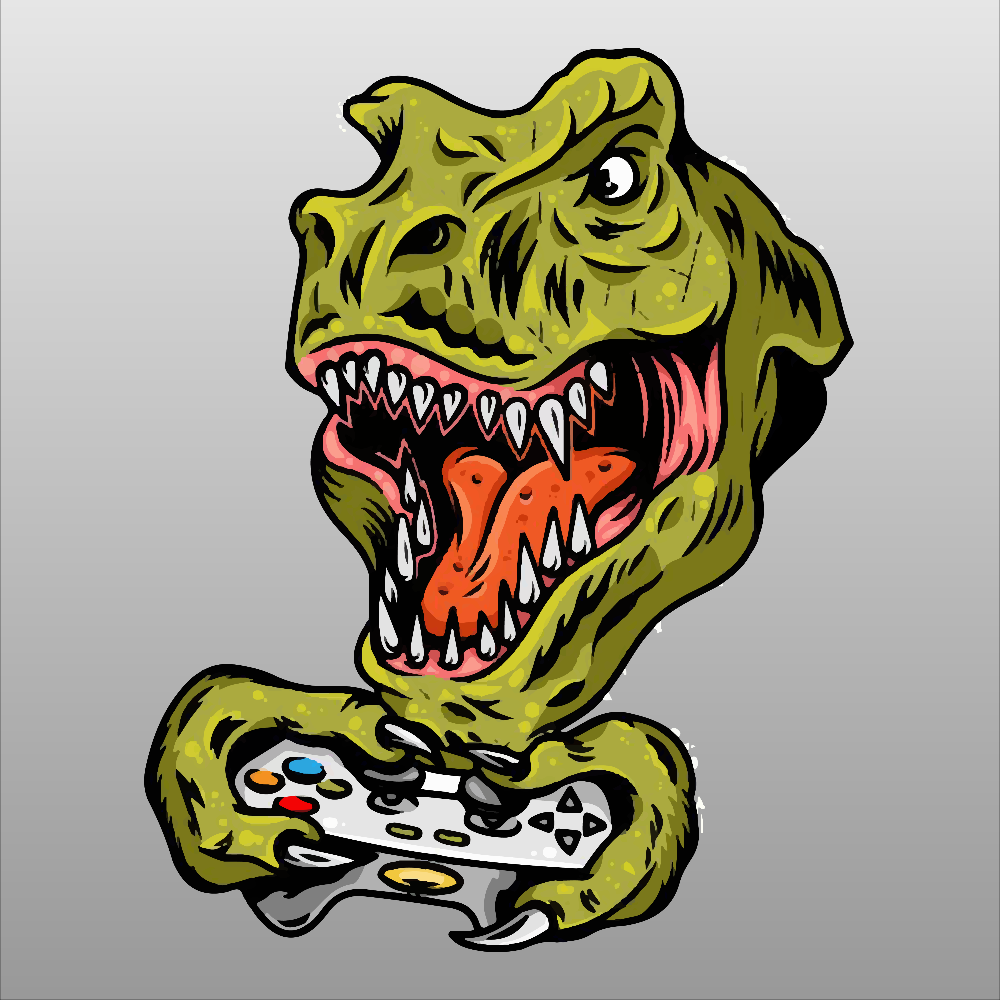

Welcome to Getting Trashed. This game is a free online website created as a project in computer science by Jai Matthews and Tyrell Carli. Please enjoy the game and try your best to aim for the high score! Once you’re done, check out our statistics page and enjoy data collected by fellow game players not unlike yourself.
To play the game, look at the image of trash and click on which bin it belongs in. But be quick! You only have a very short amount of time to make your decision. Once you get that one, do another. And another, and another, and another. After you put 15 pieces of trash in the bin you can find out how you went! Hopefully, you’ll have gotten 100%. If not, better luck next time.
After you’ve mastered the game, go to our very own STATISTICS page where you can see key information about how everyone else has played the game. You can also see which house is currently in the lead.
Use the knowledge you acquire through this task to make better judgements when putting trash in the bin. Always make sure you’re putting the correct item in the correct bin and together we can save the planet!
| Jat Matthews | Tyrell Carli |
|
 |